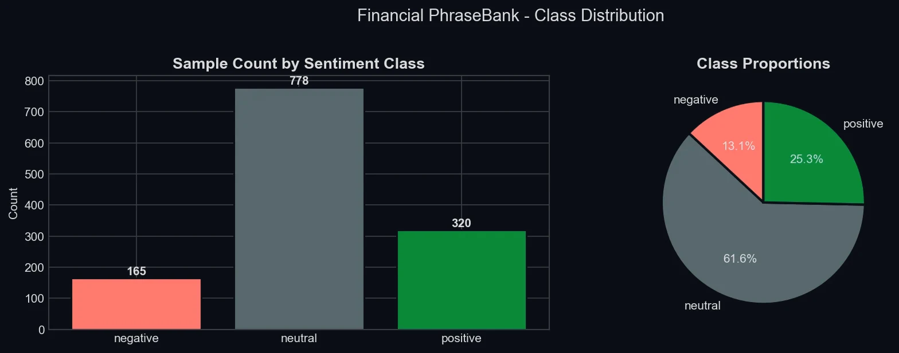
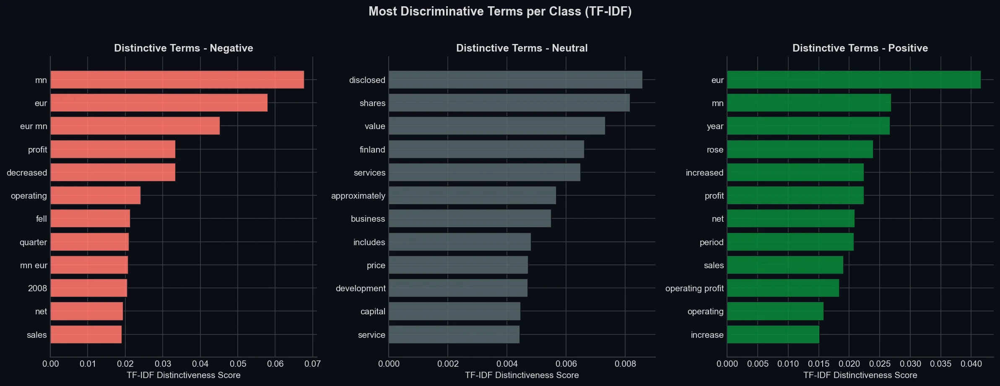
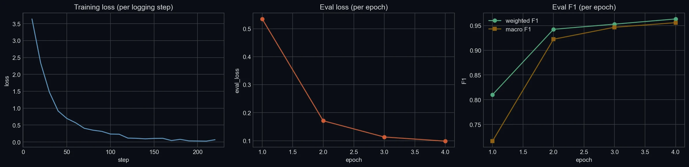

Why financial text is hard
“Profit” is good news until it is a profit warning. “Operating profit was EUR 1.6 mn in 2005 compared to EUR 5.9 mn in 2004” contains no negative word at all. A bag of words sees profit; an analyst sees a 73% fall.
The data is Financial PhraseBank, the sentences on which every annotator agreed: 1,263 after removing duplicates, 62% of them neutral.

A baseline first
TF-IDF over words and word pairs into a class-balanced logistic regression, with C tuned on the validation set. It scored a weighted F1 of 0.866 on the test set: respectable, and a fair bar for a transformer to clear.

Try to fool the baseline
This is the real baseline, exported from the saved scikit-learn pipeline and matching it to six decimal places. The examples are test sentences it gets wrong.
Fine-tuning FinBERT
I started from ProsusAI/FinBERT and replaced the head for my label order. Rather than oversample, I subclassed the Hugging Face Trainer to inject class weights into the cross-entropy loss: 2.56 for negative, 0.54 for neutral, 1.32 for positive. Four epochs at a learning rate of 2e-5, trained on a CPU.
| neg | neu | pos | |
|---|---|---|---|
| negative | 20 | 2 | 3 |
| neutral | 1 | 111 | 5 |
| positive | 4 | 10 | 34 |
165 of 190 right. Rows are the expert label, columns the prediction.
| neg | neu | pos | |
|---|---|---|---|
| negative | 23 | 0 | 2 |
| neutral | 0 | 114 | 3 |
| positive | 0 | 0 | 48 |
185 of 190 right. Every remaining error leans positive.

Shipping it
The model sits behind a FastAPI service with Pydantic validation, a single and a batch endpoint (up to 32 texts) returning per-class confidence, and generated OpenAPI docs. The service is packed into a Docker image on python:3.10-slim, pushed to Amazon ECR and run on an EC2 instance. A pytest suite covers the API, the predictor and a training smoke test.
What I would do next
- Run the tests in CI on every push, and rebuild the image from there.
- Put HTTPS in front of the API, so a page like this one can call FinBERT directly.
- Log live predictions and watch their class mix drift against the training data.